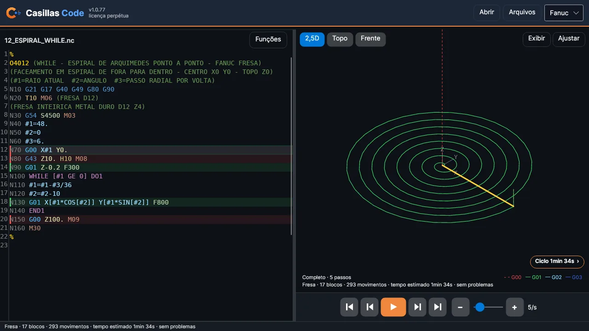

Da peça ao programa: tudo para quem vive de usinagem
Editor e simulador CNC, CAM, macros, aulas e calculadoras. Ferramentas feitas por quem está no chão de fábrica, para Fanuc e Siemens.

Módulos da plataforma
Toque em "Conheça" para ver o que cada módulo faz.
Como começar
Três passos, sem complicação.
Crie sua conta
Com e-mail e senha. Uma conta serve para toda a plataforma.
Teste grátis
Abra o Casillas Code no navegador e use com seus programas.
Escolha o módulo
Editor, CAM, Macro, Academy ou calculadoras: use o que precisar.
Perguntas frequentes
Preciso instalar algo?
Não para começar. O Code, o CAM rápido, a Academy e o Macro abrem no navegador. O CAM completo e o Assist são para Windows.
Quais controles são atendidos?
Fanuc e Siemens, para fresa e torno.
A simulação garante que não há colisão?
Não. A simulação é 3 eixos, em grade de alturas, e serve de apoio. Ela não substitui a verificação do programa antes de rodar na máquina.
Funciona no celular?
Sim, as telas se adaptam ao celular. Para editar programas grandes, o computador é mais confortável.
Tem suporte?
Sim, pelo WhatsApp e pelo e-mail abaixo.
Pronto para testar?
Abra o Casillas Code agora ou fale com a gente.